PHOTOGRAPHER × LIGHTING DESIGNER
形象攝影 × 燈光設計 × 情感影像
SCROLLWORKS · 作 品 集
個人品牌・藝人形象・寫真
從你的特質出發，以燈光與構圖捕捉最真實的你。無論是個人品牌形象、藝人宣傳照，還是主題服裝寫真，讓每一張照片說出你獨有的故事。
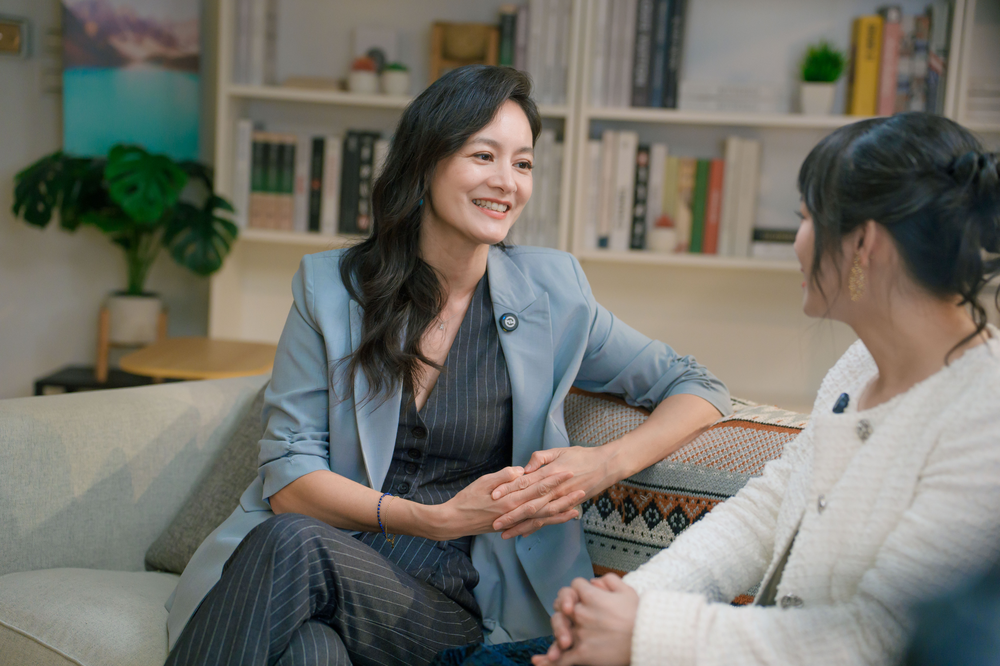
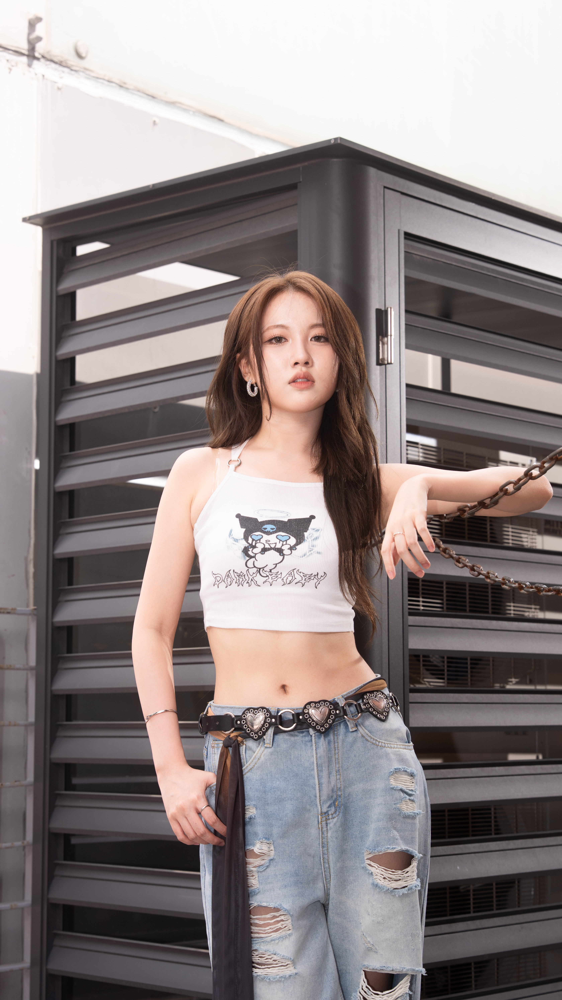
寶寶抓周 · 百日 · 主題派對
每一個寶寶都是獨一無二的存在，用影像留住這一刻的表情與眼神。從場地佈置到光線規劃，讓這份珍貴的記憶永遠鮮活。
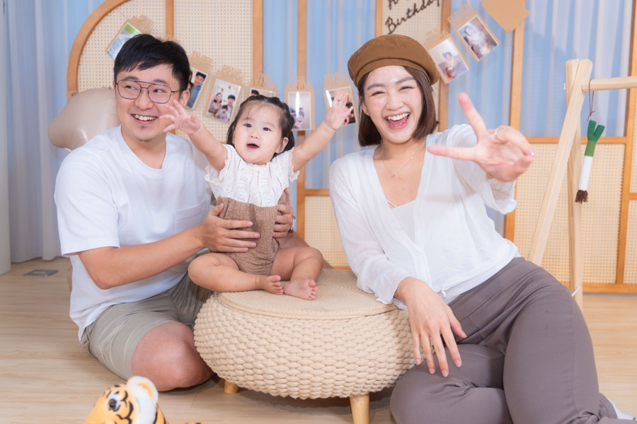
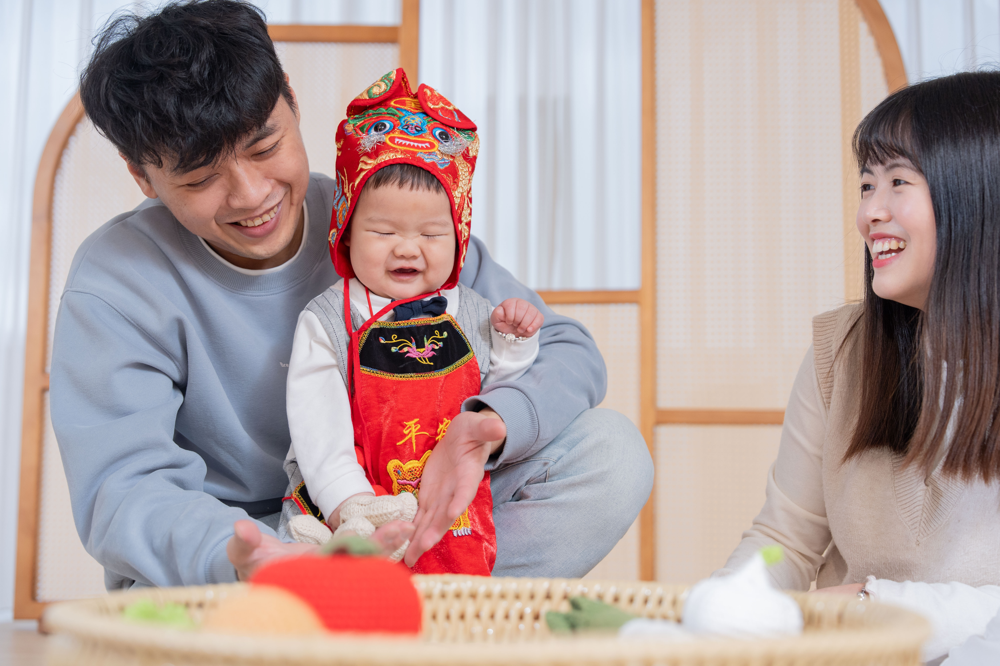
品牌活動 · MV 製作 · 商業拍攝
為品牌注入視覺力量。活動現場的每個精彩瞬間，MV 影像的畫面詩意，商業拍攝的精準呈現，讓你的品牌被看見。
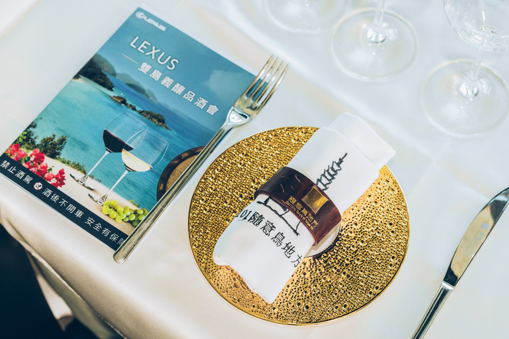
濟州島 · 日本 · 杭州 · 首爾
用鏡頭記錄旅途中的光與情感。每一幀都是屬於那個當下的詩，讓旅行的溫度永遠留在畫面裡。
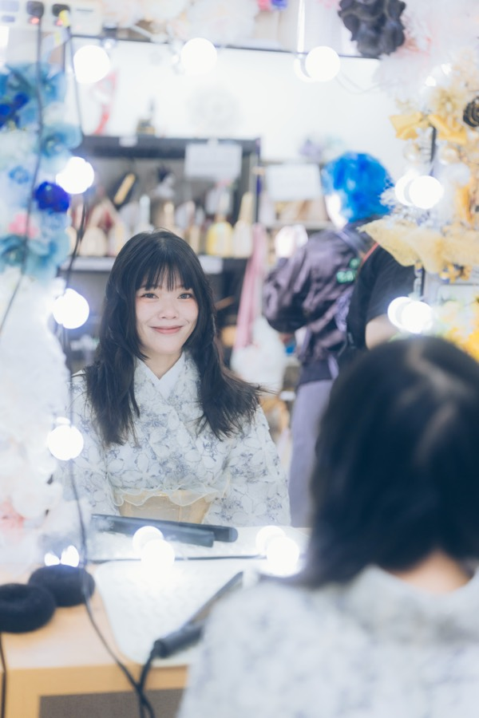
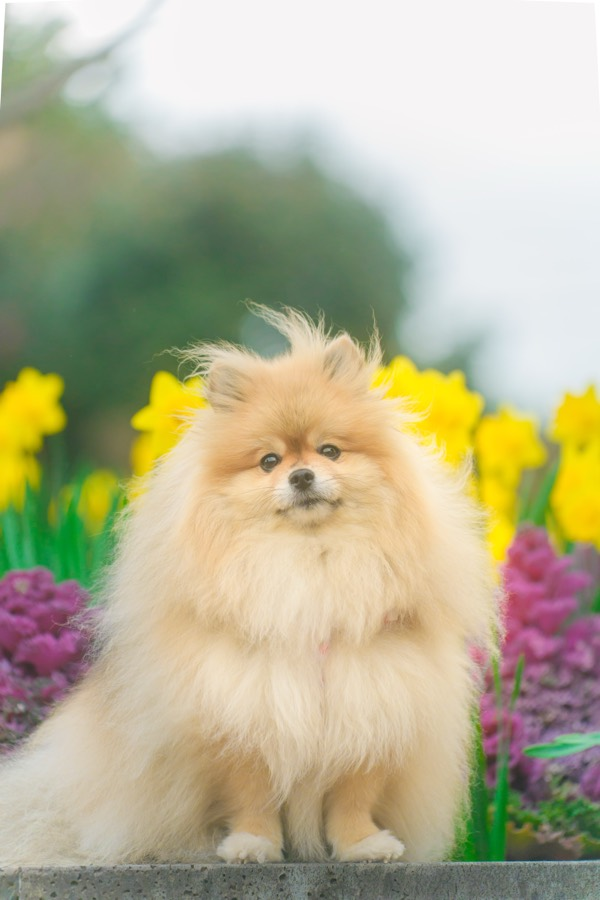
戶外寫真 · 寵物活動紀錄
記錄你的毛小孩最真實的樣子。戶外場景或活動現場，定格每一個讓你心融化的瞬間，讓這份陪伴永遠留存。
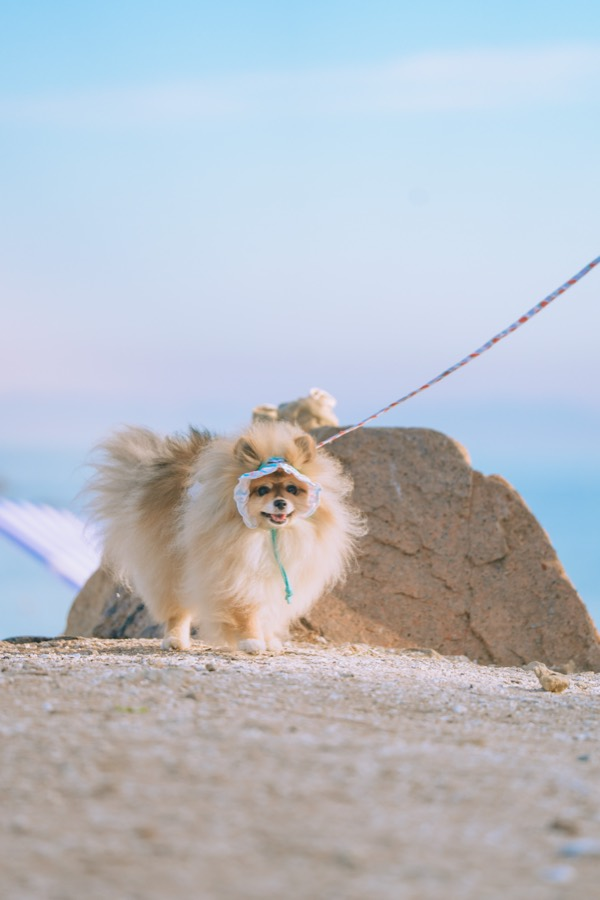
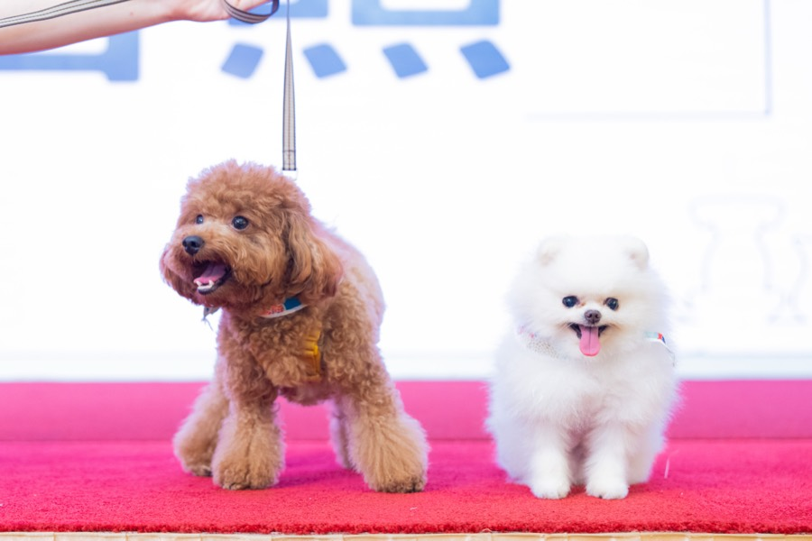
婚禮攝影 · 家庭影像
婚禮是一生中最重要的儀式，家庭是最溫暖的歸屬。我在這些時刻成為最安靜的記錄者，讓愛意永遠留在畫面中。
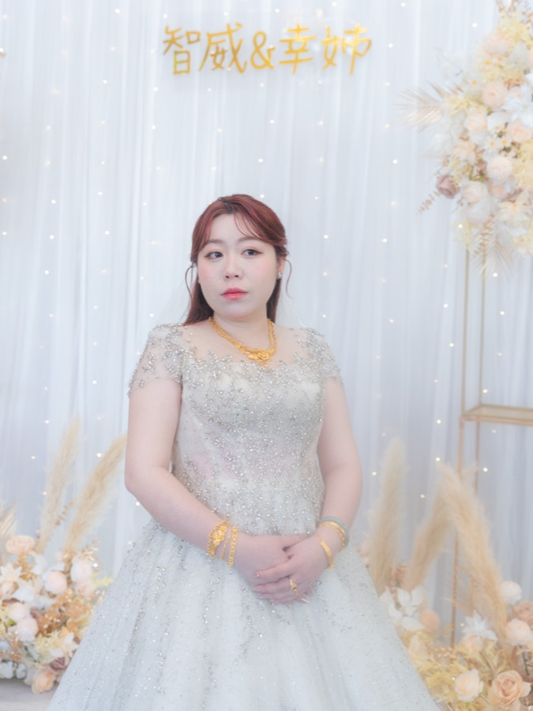
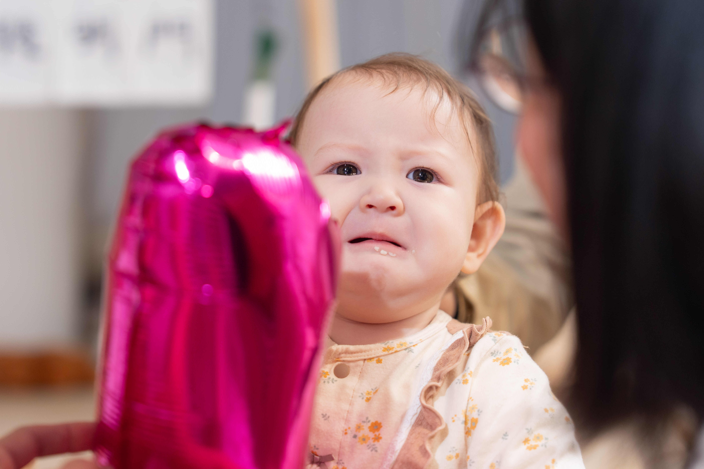
ABOUT · 關於我
機械工程出身，走過舞蹈教學，最終落腳在影像與光的世界。我相信每一個人在鏡頭前都值得被看見最真實的自己。
擅長以燈光塑造情感，用畫面說那些說不出口的故事。服務涵蓋形象攝影、品牌影像、抓周百日、寵物寫真與活動記錄。
500+
拍攝場次
6
服務類型
5
年影像經驗
CONTACT · 聯絡我
無論是形象攝影、品牌影像，還是寶寶的抓周百日，歡迎告訴我你的想法。
寄信給我